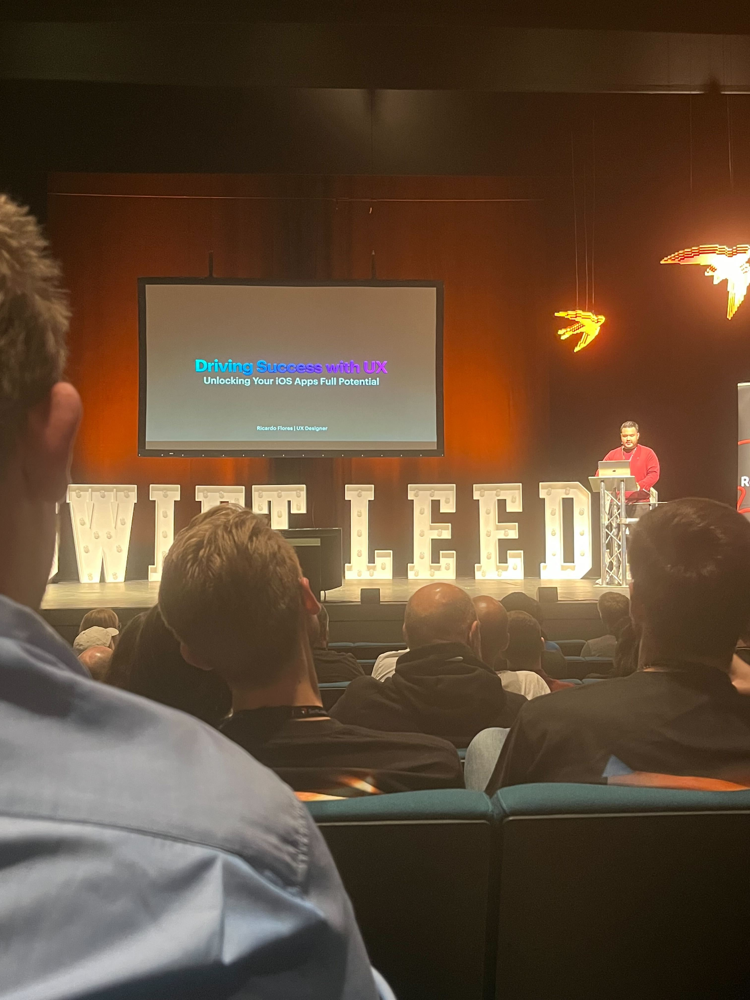

Swift Leeds 2023
17 Oct 2023
|
2 min
Last week I attended Swift Leeds again for the third time 🚀. For the second year running the conference has been held at the Playhouse in Leeds and has been home to over 300 iOS Dev’s for days of amazing talks, workshops (new for this year) and lot’s of great conversations. Having been such a success in the first two years, Swift Leeds has expanded to now be a 2 day conference with even more developers than previous years attending.
Having attended the conference since it’s first year, I’m usually always eager to get to October to get back to the conference to listen to some amazing talks. This year was no different, with the amazing lineup of speakers I was really looking forward to learning some new things.
After making the journey to Leeds on the Monday I arrived at the conference in time to get myself some breakfast and a well needed coffee (I needed the energy after the 5am alarm and train 💀). After eating I was straight into the theatre ready to hear the first talk.
Day One
The first talk on day one was from Richie Flores. His talk was heavily focused on UX and what different apps do to give their users a specific feeling. He gave examples of different apps and how they use layouts and UX to really encourage different behaviours from their users. I really enjoyed this talk because UI/UX is always something that has been really interesting to me. I actually did graphic design in school way before I ever programmed for the first time so seeing the thought process behind different design choices is always fascinating to me. Really great talk.
The second talk was by TundsDev. Having watched a lot of Tunde’s videos while I was actually learning about iOS, I was really excited to see his talk, especially when I saw the topic was about StoreKit. Having worked in codebases with StoreKit implemented in the past, I know how much of a nightmare it can me, Tunde’s talk outlined a simple approach to implement in app purchases into any app, it was a great talk which showed something that is often perceived as really difficult, in an easy way. Really enjoyed it and will 100% be using some of the advice when I come to implementing in app purchases in my own apps. Also, his usages of memes was 10/10.